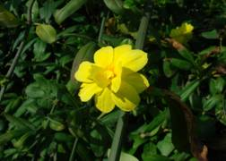
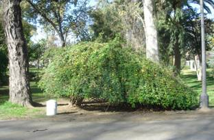

INFORME SOBRE EL GÉNERO JASMINUM
Para la actividad “Botánica de Campus”, curso 2007/08, Universidad de Sevilla
El género Jasminum pertenece a la familia de las Oleáceas (Oleaceae) dentro de la división Magnoliopsida.
Las Oleáceas son una familia de árboles y arbustos con hojas comúnmente opuestas, glabras, simples o compuestas.
Comprende unas 500 especies en su mayoría tropicales y de regiones templadas, 13 son propias de Europa.
Las flores poseen típicamente 2 estambres; cáliz campaniforme y corola a menudo tubular.
Los frutos son diversos: bayas, drupas, cápsulas, frutos alados, etc.
Tienen cierta importancia económica: aceite de oliva, madera de fresno, etc.; muchos son ornamentales y se han introducido en Europa.
Al género Jasminum, pertenecen un grupo de arbustos y trepadoras leñosas, de hoja perenne o caduca, que según la especie pueden alcanzar hasta 10 m de altura. Las flores, bisexuales, pueden ser blancas o amarillas según la especie y aparecen en grupos terminales de 1-5 flores cuyos pétalos suelen estar soldados, formando un tubo dentro del cual hay 2 estambres insertados. El fruto es una baya de color negro.
Dentro del género Jasminum se encuentran diferentes especies muy apreciadas en jardinería para tapizar muros y pérgolas, ya que sus flores desprenden un aroma muy agradable. También son muy apreciadas por el aceite esencial de jazmín que se utiliza en perfumería y con diversos fines terapéuticos como para combatir el dolor menstrual o para ayudar durante el parto y aumentar la producción de leche durante la lactancia. Así mismo, sus flores se utilizan para hacer infusiones relajantes y contra el dolor de cabeza.
Las principales especies de jazmines son:
-Jasminum officinale: Jazmín común, Jazmín morisco, Jazmín blanco, Jazminero, Jazmín de verano.
-Jasminum nudiflorum: Jazmín amarillo, Jazmín de
invierno, Jazmín de San José.
- Jasminum grandiflorum: Jazmín español, Jazmín real, Jazmín de España.
- Jasminum polyanthum: Jazmín chino, Jazmín de China.
- Jasminum mesnyi: Jazmín amarillo, Jazmín de primavera.
-Jasminum humile: Jazmín italiano.
- Jasminum sambac: Diamela, Jazmín de Arabia.
- Jasminum azoricum: Jazmín de las Azores.
- Jasminum fruticans: Jazminorro, Jazmín silvestre.
En Sevilla podemos encontrar las siguientes especies de jazmines:
J. azoricum L.
Es un jazmín perennifolio con hojas compuestas por 3 folíolos. Originario del archipiélago de las Azores. Las flores, que se desarrollan en primavera, son blancas con 4 pétalos. Según las condiciones en las que se desarrolle puede ser una densa trepadora o un simple arbusto.
J. grandiflorum L.
Es un jazmín perennifolio con hojas compuestas por 5-7 foliolos ovados. Originario del noreste de África y sur de Arabia. Florece en Julio y sus flores son blancas levemente teñidas de tonos púrpuras por debajo. Es un arbusto trepador.
J. humile L.
Es un jazmín perennifolio con hojas alternas, compuestas y con un número de foliolos variable entre 3 y 7. Origen en Asia tropical. Las flores son amarillas y muy perfumadas, con 5 pétalos. Este arbusto es trepador.
J. mensyi Hance (= J. primulinum Hemsley ex Baker)
Es un jazmín que, dependiendo del clima, puede ser perennifolio o caducifolio. Sus hojas son opuestas y trifoliadas y sus tallos son cuadrangulares. Procede de China. Las flores en este caso son solitarias y axilares, de corola amarilla semidoble, y florecen a finales de invierno. Es un arbusto que necesita apoyo.
 
J. mensyi (Parque de Mª Luisa, Sevilla) Detalle de J. mensyi
Clave de las especies de jazmines cultivadas en Sevilla:
|
1 |
Hojas trifolioladas |
2 |
|
1 |
Hojas imparipinnadas |
3 |
|
2 |
Flores blancas |
J. azoricum |
|
2 |
Flores amarillas |
J. mensyi (= J. primulinum) |
|
3 |
Flores amarillas |
J. humile |
|
3 |
Flores blancas |
4 |
|
4 |
Flores con tintes rojizos en el exterior |
J. grandiflorum |
|
4 |
Flores enteramente blancas |
J. officinale |
En el Campus, podemos encontrar:
J. grandiflorum: presente en el colegio mayor Hernando Colón (2 ejemplares); otro ejemplar en el invernadero de la Universidad y otros 2 en la Escuela de Arquitectura Técnica.
J. mensyi: un solo ejemplar en el Citius que crece apoyado sobre la torre del derruido pabellón de la Exposición de 1929.
Autora: Mª Ángeles Zaldívar Marín
Dirección y corrección: Prof. Carlos Romero Zarco